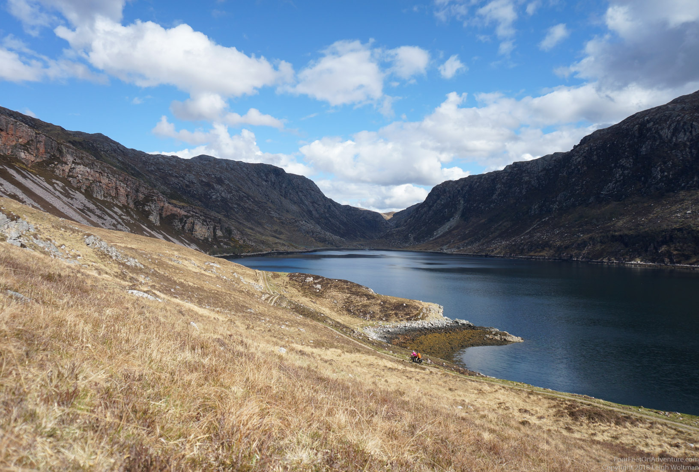

Email Us
Please send us an email, we would love to hear from you!

Just before summer tourism was expected to swamp the area, we thought it would be nice to make an overnight trip to another bothy, and after some research we decided this would be Suileag. This bothy was taken over by the Mountain Bothies Association in the same year Leigh was born, and had two rooms, each with raised platforms as beds. Because it was going to be a Saturday night and super nice weather, and we were a bit late, we thought to go for a bothy not too close, but not too far either, with 2 rooms to still have the room for ourselves. Bothies are first come first serve, and fill until full. Being late on a day like this was not the best of ideas. But, you never know. And, it is always wise to bring a tent just in case it's already full...
This bothy sits in an isolated area in the North of Scotland, a region full of isolated peaks, blanket bog and ribbon lochs, as described by the bothy book. And, according to a guy we met on the way, this is one of the last places where you can still fish for a native trout species.
Suileag was only a 2.5 mile ride in, over a track that was described as "Easy, track all the way." Well, easy to navigate perhaps, but that track was all but easy. We passed some hikers on their way back to the car (this was when we started realizing how popular Suilvan is), and they all thought we were brave taking our tandem on this road. We smiled. But after a bit, had to agree with them. Parts were so steep with loose rocks that we had to walk. Other parts that had an ok gradient, were hard to navigate because of big rocks everywhere, and sometimes the left and right track of the path would be so low that the middle of the path would stick out high. In combination with rocks, that is very difficult to navigate on a tandem, because for the captain it is difficult to estimate when the pedals of the stoker are going to be down, and when the crank is going to be where a rock is. On a mountain bike you would be going around obstacles such as rocks constantly, but because the tandem is longer, you may just hit the rocks under the stokers crank. Furthermore, the stoker would be leaning into turns, and if the captain is going around things continuously, it is hard for the stoker to follow. After a first meltdown, we had a sip of water, and tried to over-communicate the exercise. Annette, the captain, would be constantly talking "up, down, left, around, slow, speed, left, up, right, ....". Leigh, the stoker, would try to respond with trust. He would also encourage, saying such things as "no, faster, we can handle this," for a slope with loose gravel where Annette wanted to walk, while later admitting that actually he couldn't see the path but just didn't want to walk. But, with a team effort, and a couple of slopes where the bike had to be dragged up, the course was conquerable. It didn't take long before we were rewarded with an amazing view on Suilven.
Suilven is quite something. Although "only" 731 meter high, this majestic peak is one of the finest peaks in Britain, one of the most recognizable peaks in Scotland, and many more interesting descriptions, depending on what website you read. It is a beauty, recognizable from far away, and rises up from the landscape as a ginormous pillar. It looks like it should be climbed with a rope, but it's made of sandstone, and could be too crumbly as I don't think there are any rope routes on the steep parts. We were truly amazed by its beauty, and the weather, that was nice and warm for the time of the year, only added to that good feel.
We found the exit off the main path, to the bothy.
After a little rest, we cooked and lit the fire. We brought some fake wood logs. You lit them at the corner of the package, and they should burn for about 3 hours. They give off a little bit of heat and a warm feeling, without too much smoke. We kept on thinking someone was bound to show up, but we remained the only ones for the night. This bothy felt very homy. There were books lying around, a few candles to be lit. We roamed around a bit and had a good night sleep.
Annette couldn't resist the call of Suilvan in the morning. Leigh stayed at the bothy to read a book in the sun, having only his biking shoes with him and somewhat frustrated he didn't sneak in some hiking boots like Annette. Annette found some campers in front of a tent about 500m up the road, they couldn't find the bothy. Further up on Suilven she passed another two parties, and two Germans who had a brisk night up on the top, and were now making their way down. The top and view were amazing. When Annette went back, a guy and his drone started to capture the sights at the top. Back with Leigh, it was time to pack up the bike and go, although Leigh was in the middle of a book, and wasn't sure if the bothy ethics allowed bringing it with him, we decided to rent it at the library later to finish it.
The road back also had amazing views in the direction of Lochinver, a fishing port, and the ocean, with the Western Isles far far away in the background.
Close by was another bothy, and we figured we would check it out on the way home. Luckily we hadn't chosen it as our overnight destination, as there was a sign saying that the bothy was closed for restoration that weekend. We thought it would make a nice bike ride, so we went to have a look. This bothy was called Glendhu, renovated by the Duke of Westminster's family, who owns the Estate around it and comes by yearly for deer hunting season. It is at the end of a sea loch, and follows an interesting trail. We had a look, and a chat with the renovating crew, all very nice people, who are volunteering their time to work on this beautiful project. They definitely hit the jackpot considering weather, and could even work on painting the roof, as there was no rain anywhere to be seen or expected. The path there and back was about 4 miles, and really a joy to bike. Hard work, but with our level of collaboration a piece of a cookie. Or, I guess I should say "just possible." Our wide tires were definitely also helpful, some of the loose gravel I wouldn't have liked on my touring bike. And, big advantage on a tandem, since someone is sitting on the back, there is a very slim chance on a head-first-over-handlebars on a downhill, so the trick is to just hold the handle bars in the right position, and go for it while hoping for the best. An amazing ride.

Completely exhausted, but happy, we arrived back to the car. Scotland, what a lot of adventures. We can't wait to be back here in a kayak...
Please send us an email, we would love to hear from you!